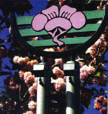

Nihonmachi Outreach Committee (NOC)
The Nihonmachi Outreach
Committee (NOC) is a progressive organization based in the San Jose Japanese
American community that is dedicated to educating the public about the
incarceration of Japanese Americans during World War II, and as a consequence,
is committed to defending all people on issues of civil rights, equality,
justice, tolerance and peace.
“In the End, we will remember
not the words of our enemies, but the silence of our friends.”
-
Martin Luther King, Jr
NOC was founded in 1979 by a
group of grassroots community activists who were concerned about the preserving
the unique character of Japantown (Nihonmachi) during redevelopment.
In fact, the signature
symbol of Nihonmachi that is seen on signs and banners throughout Japantown
was created as a result of a NOC-sponsored contest. The plum blossom on the
emblem represents strength and endurance. The green bands represent the San
Jose agricultural history.

During the 1980’s, NOC was an
active participant in the redress and reparations struggle. At the hearings
sponsored by the Commission on Wartime Relocation and Internment of Civilians
that was held in San Francisco, NOC was able to provide one of the largest Issei
testimonies. NOC also organized a contingent from San Jose for the 1987
National Coalition for Redress/Reparation that lobbied Congress to support the
redress bill.
NOC continues to fight for the
Redress of Japanese Latin Americans who were also incarcerated during World War
II.
NOC has been hosting the San
Jose “Day of Remembrance” event since 1981.
The “Day of Remembrance” commemorates Executive Order 9066, which
President Franklin Roosevelt signed on February 19, 1942, and which eventually
led to the incarceration of 120,000 Japanese Americans during World War II.
In the post-911 era, the “Day of
Remembrance” is also an important event in building intercommunity trust,
respect and understanding. The event
features speakers, exhibits and performers from various communities.
At the “Day of Remembrance,” we
renew our commitment to justice, equality and peace for all people.
NOC continues to provide forums
that address issues concerning Asian Americans, intercommunity dialog, justice,
equality and peace.